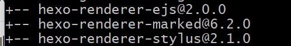
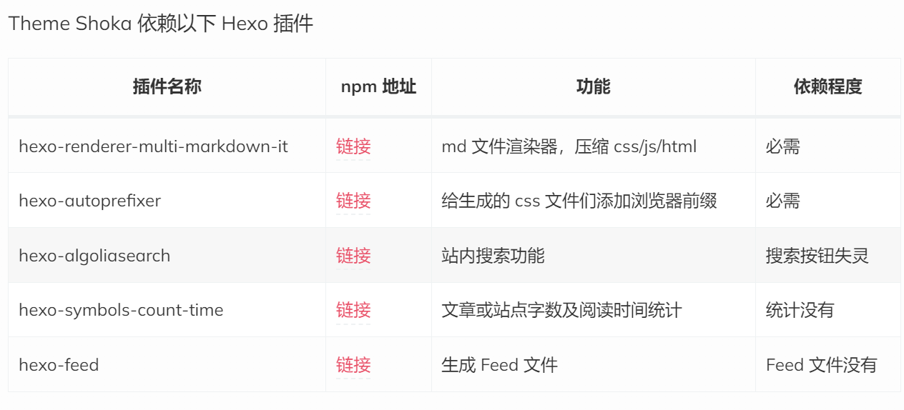
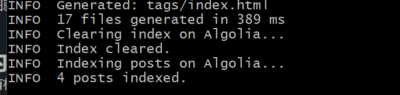
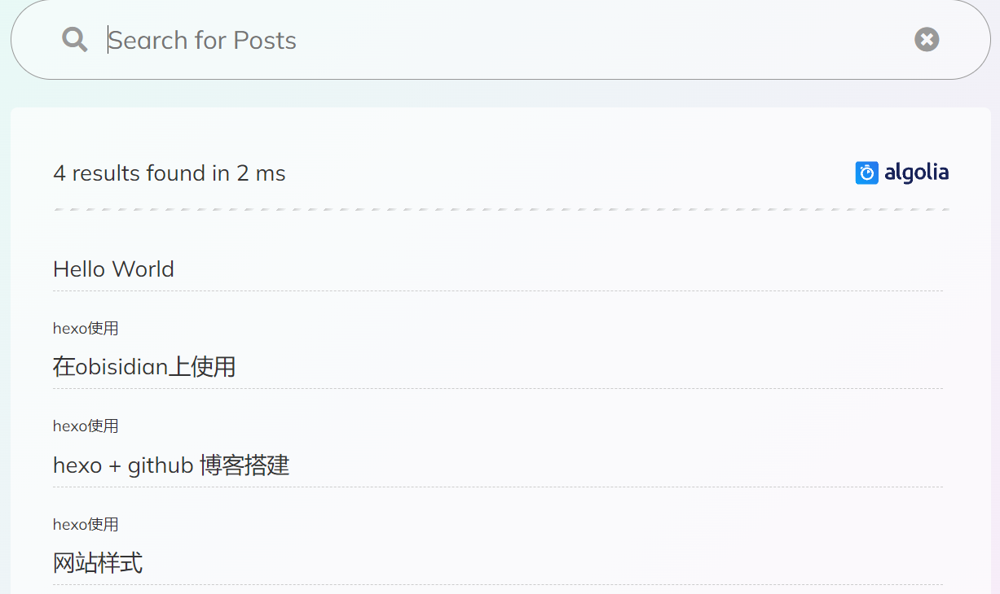

shoka 样式，交互爽，好看又不乱（该关的还是得关，页面动画看多了腻），老早就馋了。
# 安装
git clone https://github.com/amehime/hexo-theme-shoka.git ./themes/shoka
# 环境
- 卸载掉默认的
hexo-renderer-marked(有默认的路径处理，不行就回退)npm un hexo-renderer-marked --save- 
- 安装
npm i hexo-renderer-multi-markdown-it --save- 遇到 Error: read ECONNRESET，网上是：
npm config set registry http://registry.npmjs.org/更新代理 - 后细读发现是 puppeteer 安装问题，原文有提及，不使用 mermaid，加上 --ignore-scripts 忽略即可
- 遇到 Error: read ECONNRESET，网上是：
- 按原文依赖插件安装插件，并且添加 / 更改相应的 yaml 配置
- theme: shoka # 默认：landscape

https://pigpigletsgo.github.io/hexo/shoka/ 配置 shoka 主题 /
遇到了渲染错乱，c、g、s 都没问题，但网页显示一坨。
查到有说法是 js-yaml 版本不对，结果一看我都没这个，添加后好了
npm install js-yaml@3.14.1
还包括 package.json 的替换
# 基本配置
包含哪些插件和设置见：基本配置
唯一要注意的文中推荐 theme 下自定义_config.[theme].yml 配置文件
官网也说：Hexo 在合并主题配置时，Hexo 配置文件中的 theme_config 的优先级最高，其次是_config.[theme].yml 文件，最后是位于主题目录下的_config.yml. 然而_config.[theme].
然而 theme 下_config.[theme].yml 并没有覆盖_config.yml。最终还是都写在了_config.yml 中
# 界面配置
界面设置
# 搜索功能
按默认的
# Algolia Search 搜索功能 | |
# For more information: https://www.algolia.com | |
search: | |
hits: | |
per_page: 10 |
还需要注册 algolia（mark：我用 GitHub 注册的）并配置相关设置（algolia 提供给个人用户上限 1 万条索引记录和每月 1 万次的搜索次数）
配置参考
参考
更新： hexo algolia
如下图就是成功了


# 站内跳转
官方有标签插件实现站内文章链接，如下：{% post_link 'hexo blog' %}
样例： {% post_link hexo使用/在obisidian上使用 '在obisidian上使用' %} 要用相对路径
这儿优先使用文章 Front-matter 中的 permalink 字段，如果没有 permalink ，则使用 文件名字 ！
官方文档还有一个 post_path ，用于获取文章路径，结合 markdown 内置的链接方式，即可实现锚点超链接，如下：（这个一直没成，站内就用 post_link 了，外链用 []() ）[hexo 安装]({% post_path 'hexo blog' %}#安装)
也可以使用 html a 标签实现，如下：<a href="{% post_path 'hexo blog' %}#安装">hexo 安装</a>
页内标题跳转[](#标题名)
样例：环境 ，实现 md [环境](#环境)
# 评论
Valine
# 图库
说是：/themes/shoka/_images.yml 会被 /source/_data/images.yml 代替 (至少要有六个覆盖默认的列表) 。发现也并没，也可能是我的链接未生效，再看 ing
随机图床集合
随机二次元图床
# 补充
记录找到的使用 shoka 的各类问题 & 解决方法 & 功能扩展
1